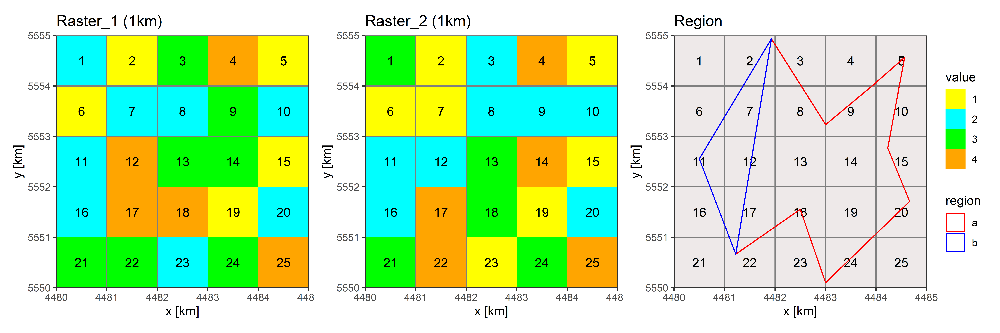
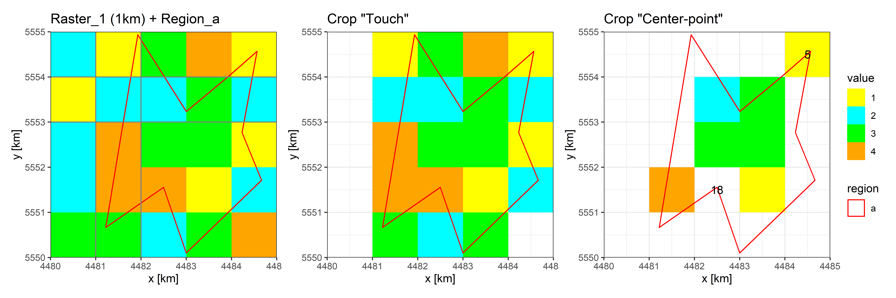
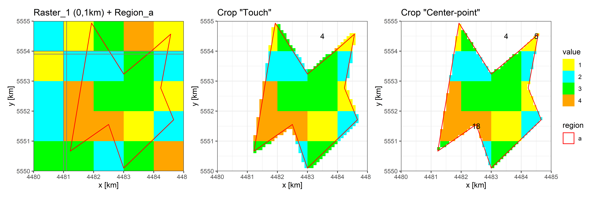
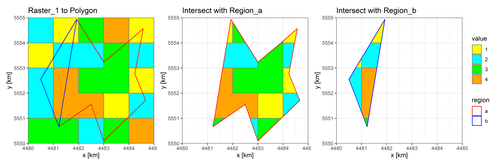
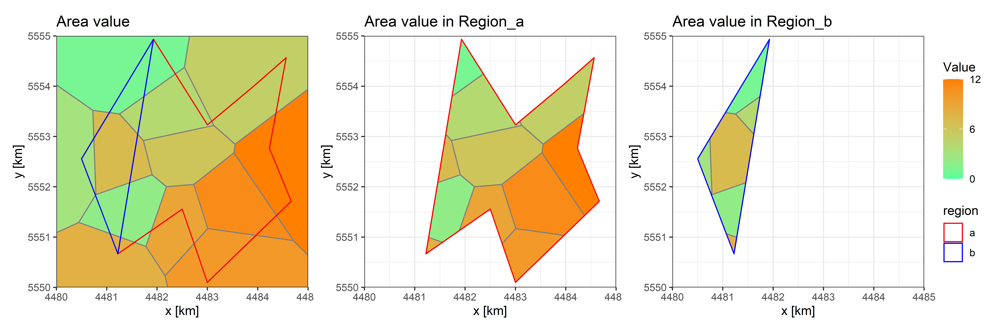
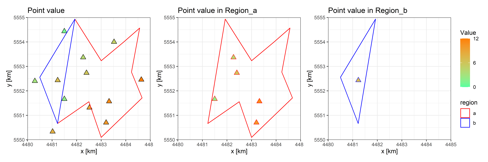
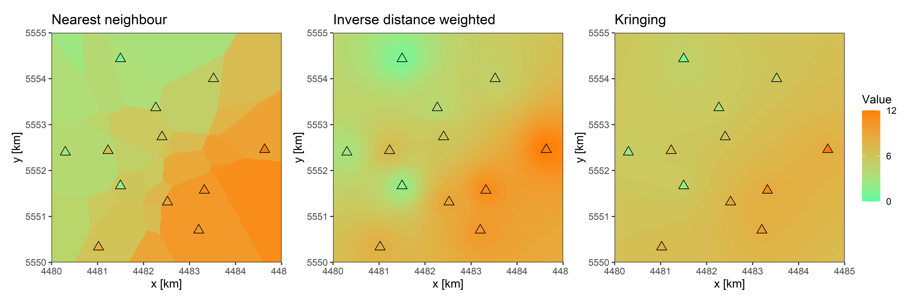

Extract values from Raster Data
1 Raster Data
Raster Data is actually a kind of Sample data of a area, the area will be divided in regular grids (equally sized rectangles). The typical raster data like elevation is already the most important data for many spatial-based research fields. The raster form is also the important form for meteorological data, in order the area-value (e.g. Temperature and Presentation) to represent. But for the application e.g. in the Hydrology need we some statistical values for specific research regions, especially the Average.
Therefore we need the operate EXTRACT.
1.1 Extract from Raster
The basic Data are like:

- two Raster data
- two Regions shape files
For the operate EXTRACT, we need basically the raster data and the regions (shape files). Before this we must confirm that, the both data are in the same CRS (coordinate reference system). In this Blog we discuss only the theories and ideas about EXTRACT. There will show total four methods:
1.1.1 Rough with original resolution
The first method we just use the original Raster with original resolution. But when the resolution not so fine, it will occur to that the selected grids have the big difference than the region. This is one very typical Problem in meteorological data, they have not so gut space resolution because the time resolution is always finer than the common geological data. In order to balance the data size, we must reduce the space resolution.

For the SELECT, there are two familiar methods Touch and Center-point:
Touch: all the grids, who touched by the region, will be selectedCenter-point: only the grids, who’s Center-point is with in the region, will be selected
For the both SELECT methods there some implausible cases:
when we use
Touchmethod, it will select some grids, who has only a little area within the region, like Cell 4Cell 5: only an eighth of the area within the region, but it counts as a “whole cell” just because its center is in the region
Cell 18: with three quarters of the area in the region, but is not selected, just because the center is not in the region
Summary we can say: the original resolution can be used, only when the deviation between the grids and region is not so big and
Touchincludes all grid cells that are touched, so can be used for some extreme statistical value (e.g. Max or Min)Center-pointcan be used for the average value and actually the deviation maybe reduced, due to the surplus of selected grids and deficit of not selected grids in the boundary.
1.1.2 Refine resolution
The second method is one simplest method, we need only refine our data in higher resolution, like resolution in 10 times finer and the grids will in 100 times more.
Essentially there is no difference as 1. method, but the problem will be solved. This method is pointed, just because I must use Matlab processing the data, but there is no spatial Analyse Toolbox in Matlab. Therefore this is fast the only Answer, just because the Refine needs no supply from spatial Analyse Toolbox, we can easily repeat the data 10 more in row and 10 more in column.

Like the figure shows: the accuracy is gut improvement, the deviation should lay under the 1%.
1.1.3 Exact with Area
The weighted mean is always exacter than the numerical average. The important Point for the weighted mean is the weights, in the spatial analyse it’s the portion of the area. So, the main task in third method is calculate the area of every value, that within one region.
In order to calculate the area, we need actually convert the raster grids into shape, for the convert we have also two methods:
- the same value as one Polygon (this method should more convenient for the categories data with only several value)
- every grid as a rectangle polygon, then calculate the portion of the area, where is located within the region (this method is use in
R::terrapackage, but there is also a small deviation, when the CRS lie in lon-lat. The portion of one grid will be not equal to the portion of the region, because the grid area one to one is already different.)

In the Illustration is every value as the same polygon converted.
1.1.4 Exact with scale product
This method is designed only for the meteorological data, those have the big mange on time scalar. It’s also the most effective method in the practice.
The theory and the formal is just like:
\[ \vec{\Omega}_{[time,region]} = \vec{A}_{[time,grid]} \cdot \vec{W}_{[grid,region]} \]
\(\vec{\Omega}_{[time,region]}\) = Region-value of every region
\(\vec{A}_{[time,grid]}\) = all Value in the matrix [time, grid]
\(\vec{W}_{[grid,region]}\) = Weights of every grid to every region in the matrix [grid,region]
1.1.4.1 Weight-Matrix
For the Weight-Matrix calculate we just the portion of the grid area only that within the region to the whole region area (but not the whole grid), then divide the area of the region.
One example weight_grid:
[R1] [R2]
[G1] 0.000 0.00
[G2] 134364.119 189431.77
[G3] 212464.416 0.00
[G4] 2747.413 0.00
[G5] 150176.618 0.00
[G6] 0.000 45011.22G for Grid and R for Region
1.1.4.2 Value-Matrix
One example mat_value:
[G1] [G2] [G3] [G4] [G5] [G6]
[T1] 2 1 3 4 1 1
[T2] 3 1 2 4 1 1 T for Time
The end.
2 Vector Data
Compared to the raster data are Vector data describe the data use mange Shapes, the basic (or we can say the only three) Shape form are Points, Lines and Polygons. In all cases, the geometry of these data structures consists of sets of coordinate pairs (x, y). (From terra The geometry just define the location and topology, the other important part of vector data is the attributes of every shape, in that store we the data.
In our Hydrology or Meteorology fields have we usually the point-data (e.g. data from measuring station) and area-data (e.g. land use or soil). There may be also some line-data (e.g. isoline), but they are always not used for storing the data, maybe just show the data. So, the operate EXTRACT is actually the statistic of the Vector data for the specific regions.
And in the Blog we will only take the forms POINTS and POLYGONs into account.
2.1 Extract from Polygons
When we just EXTRACT one value (one attribute) we can straight use the function intersect(), to intersect the data-polygons and regions-polygons then calculate the statistic values for every regions.

But when we need to extract more values (attributes), again the idea from last Blog Exact with scale product will be used:
\[ \vec{\Omega}_{[attribute,region]} = \vec{A}_{[attribute,polygon]} \cdot \vec{W}_{[polygon,region]} \]
\(\vec{\Omega}_{[attribute,region]}\) = Region-value of every region
\(\vec{A}_{[attribute,polygon]}\) = attributes list in the matrix [attribute,polygon]
\(\vec{W}_{[polygon,region]}\) = Weights of every polygon to every region in the matrix [polygon,region]
Weight-Matrix create: just use
intersect()then statistic the portion of the value-area to the region-area in matrix [value-polygon, regions]Value-Matrix create: connect the attribute list
scale product with both Value- and Weight-Matrix
2.2 Extract from Points
2.2.1 Numerical Mean
The moooost simple and direct method is the Numerical Mean of points in the region:

- Interset with regions, then select points which in the region
- Calculate mean value of points
The weakness are also obviously, many points, who lay just near the boundary of region, will be ignored. It’s also familiar that in some regions there are no points laying in.
So, we need maybe convert the point-data to polygon- or raster-data
2.2.2 Tiessen (Dirichlet) Polygon
Actually the convert to the polygon is the most popular and typical method specially with the Tiessen (Dirichlet) Polygon in meteorological fields.

- Convert point data to Tiessen polygon data
- use the method of polygon like above
2.2.3 Interpolate as Raster
The second convert idea is convert to the raster: Interpolation

The Interpolation is also one important issue, and it will be discussed in th near future. Here will just show the three most impotent methods: Nearest neighbor, IDW (Inverse distance weighted) and Kringing
The three methods are also very easy processed in R::terra, that will be showed in the next Blog.
The end.